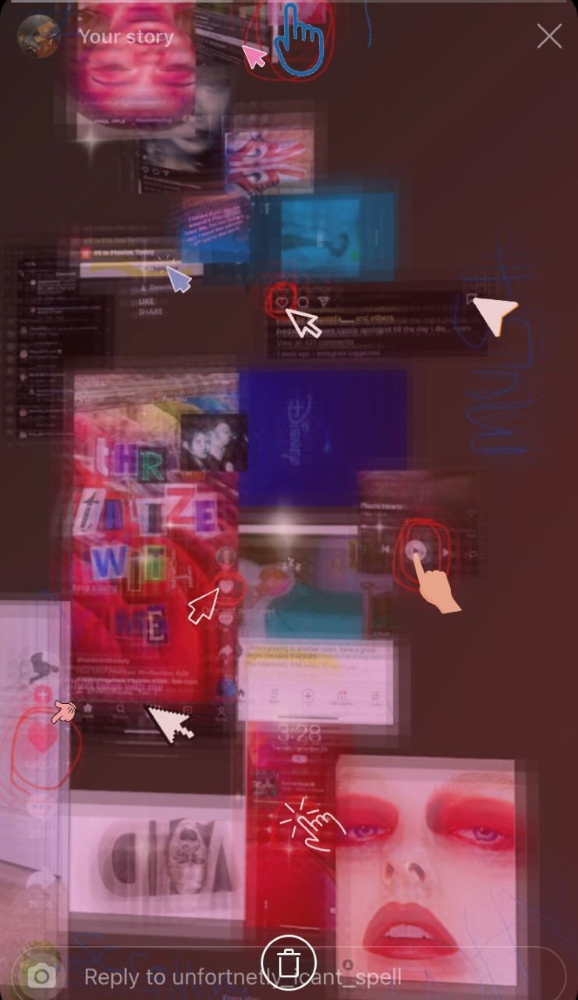
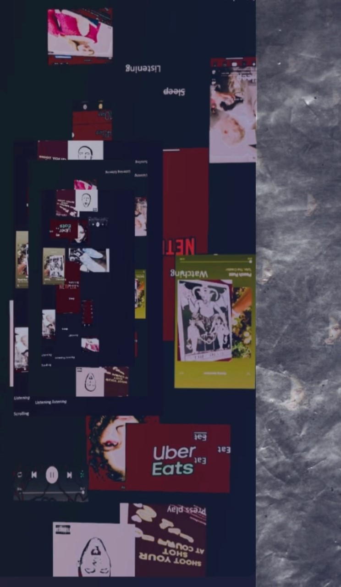
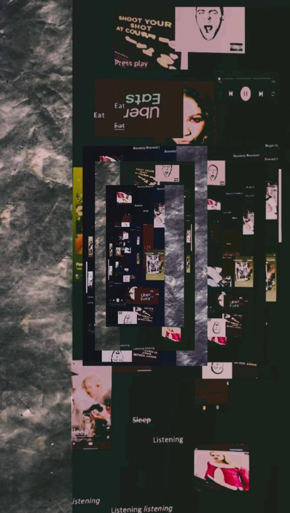

Assignment 1 Anthe Walters
In my first attempts to create a poster without using Adobe or other softwares created for design my first concepts started with using word note to place my images together. My idea for this assignment was talk about what I exericed throught covid, since I was on soical media so much and it was like my only out reach I decided to use the screenshots of various things I saw and how they would form together.
After placing all my images in one note and cropping them with the photo app on my Iphone I brought the larger images
into instaram to apply diffrent filters and effects to create a distorted style.
*Click image to go to next step*


